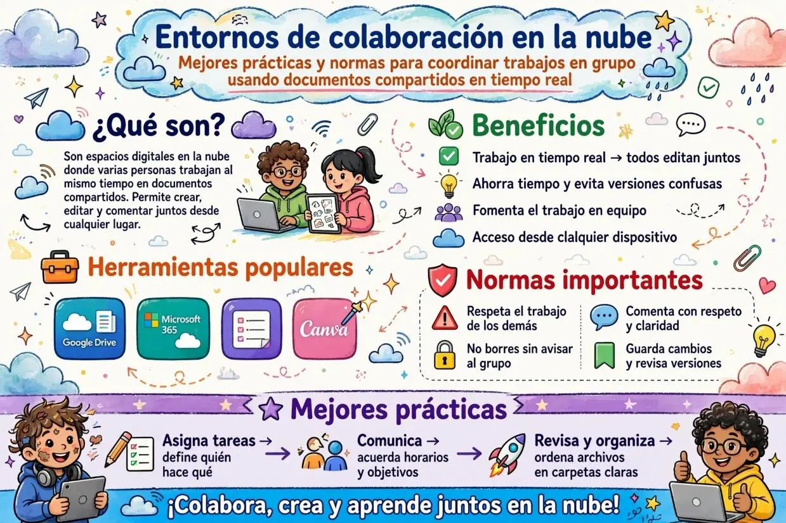
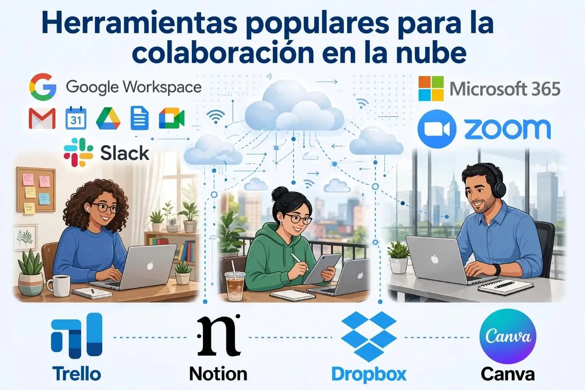
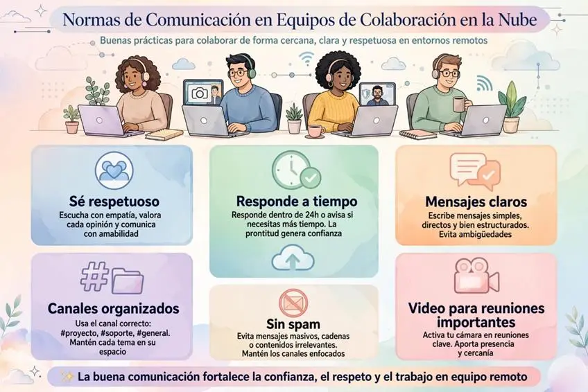

Entornos de Colaboración en la Nube: Guía para Trabajar en Grupo sin Caos
¿Qué son los entornos de colaboración en la nube?
Los entornos de colaboración en la nube son espacios o plataformas digitales que permiten que varias personas trabajen juntas, compartan información y realicen actividades de manera simultánea a través de Internet. En estos entornos, los archivos y documentos se almacenan en servidores en línea, por lo que los usuarios pueden acceder a ellos desde diferentes dispositivos y lugares.
Además, permiten editar documentos, compartir archivos, dejar comentarios, comunicarse y organizar tareas sin necesidad de estar físicamente en el mismo lugar. Son muy utilizados en colegios, universidades y empresas porque facilitan el trabajo en equipo, la comunicación y la organización.

Las herramientas más usadas (y gratuitas)
- Google Workspace – Docs, Drive, Meet, Gmail
- Microsoft 365 – Word, Teams, OneDrive
- Zoom – videollamadas
- Trello – gestión de tareas
- Notion – notas y bases de conocimiento
- Dropbox – almacenamiento y archivos compartidos
- Canva – Diseño de presentaciones, infografías, pósters
- Slack – chat y comunicación de equipos

Mejores prácticas para no volverse loco
1. Organiza el espacio antes de empezar
Antes de escribir una sola línea, dedica 10 minutos a estructurar:
- Carpeta principal con el nombre del proyecto.
- Subcarpetas claras: Borradores, Fuentes, Imágenes, Entrega final.
- Documento maestro con el índice y la distribución de secciones.
- Un solo lugar para la comunicación (no mezcles WhatsApp, correo y comentarios del documento).
2. Asigna roles claros desde el inicio
- Coordinador/a: Revisa que todos cumplan plazos, unifica el documento final y resuelve conflictos.
- Editor/a de contenido: Se encarga de la redacción, coherencia y estilo del texto.
- Revisor/a de datos: Verifica que las citas, estadísticas y fuentes sean correctas.
- Diseñador/a: Se encarga de la presentación visual: imágenes, formato, portada.
Importante: Los roles no significan que solo una persona escribe. Todos aportan contenido, pero cada uno tiene un área de supervisión.
3. Usa el historial de versiones (tu salvavidas)
Todas las plataformas en la nube guardan automáticamente cada cambio. Si alguien borra algo por accidente, puedes recuperarlo.
- En Google Docs: Archivo → Historial de versiones → Ver historial de versiones.
- En Word Online: Archivo → Información → Versiones anteriores.
- En Notion: Icono de los tres puntos → Historial de página.
Norma de oro: nunca trabajes en un archivo descargado en tu computadora y luego lo subas. Siempre edita dentro de la plataforma en la nube.
4. Comenta, no edites sobre el texto de otros
Cuando revisas el trabajo de un compañero, usa los comentarios en lugar de borrar o reescribir directamente. Esto evita conflictos y permite discutir ideas.
Normas de comunicación dentro del grupo

✅ Haz esto:
- Responde los comentarios del documento en menos de 24 horas.
- Si vas a estar ausente, avisa con anticipación.
- Usa el chat integrado de la plataforma (Google Docs tiene chat en vivo) solo para decisiones rápidas.
- Para discusiones largas, usa una videollamada o una reunión breve.
❌ Evita esto:
- Editar el trabajo de alguien más sin avisar.
- Dejar comentarios pasivo-agresivos o sin construcción.
- Ignorar los mensajes del grupo durante días.
- Subir archivos adjuntos al chat en lugar de subirlos a la carpeta compartida.
Flujo de trabajo recomendado paso a paso
Semana 1: Planificación
- Reúnen al grupo (presencial o virtual).
- Eligen la plataforma y crean la carpeta compartida.
- Definen roles, secciones y fechas de entrega parcial.
- Crean el documento maestro con el índice.
Semana 2-3: Desarrollo
- Cada uno escribe su parte en el documento compartido.
- Usan comentarios para dar feedback entre pares.
- El coordinador revisa el avance cada 2-3 días.
Semana 4: Revisión y entrega
- El editor unifica el estilo y corrige errores.
- El revisor de datos verifica citas y fuentes.
- El diseñador ajusta la presentación visual.
- Todos leen el documento final una última vez.
- Descargan en PDF y entregan.
Errores comunes y cómo solucionarlos
| Error | Consecuencia | Solución |
|---|---|---|
| No hacer copia de seguridad | Si la plataforma falla, pierdes todo. | Descarga una copia en PDF o Word cada 2-3 días. |
| Trabajar sin conexión sin sincronizar | Los cambios de uno sobrescriben los del otro. | Activa la sincronización automática o trabaja online. |
| No definir quién entrega qué | Se repiten secciones o faltan partes. | Usa un documento de asignaciones con fechas. |
| Dejar todo para el último día | Caos, estrés y trabajo de mala calidad. | Divide el proyecto en mini-entregas semanales. |
| Ignorar los comentarios del profesor | Entregan algo que ya les dijeron que estaba mal. | Revisan los comentarios en cada iteración. |
Trabajar en grupo con documentos en la nube es como tocar en una orquesta: cada uno tiene su instrumento, pero todos siguen la misma partitura. La tecnología facilita la colaboración, pero el orden, la comunicación y el respeto mutuo son los que realmente hacen que el proyecto funcione.
No se trata de que todos escriban al mismo tiempo sobre el mismo párrafo. Se trata de que cada uno aporte lo mejor de sí, en el momento correcto, dentro de una estructura clara. Cuando un grupo aprende a colaborar bien en la nube, no solo entrega mejores trabajos: aprende a trabajar como lo harán en el mundo profesional.